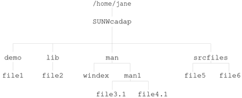

Organizing a Package's Contents
Organize your package objects in a hierarchical directory structure that mimics the structure that
the package objects will have on the target system after installation. If
you do this step before you create a prototype file, you can save yourself
some time and effort when creating that file.
How to Organize a Package's Contents
- Determine how many packages you need to create and which package objects shall
be located in each package.
For help in completing this step, see Considerations Before Building a Package.
- Create a directory for each package you need to build.
You can create this directory anywhere on your system and name it anything
you like. The examples in this chapter assume that a package directory has
the same name as the package abbreviation.
$ cd /home/jane
$ mkdir SUNWcadap
- Organize the package objects in each package into a directory structure beneath their
corresponding package directory. The directory structure must mimic the structure that the package
objects will have on the target system.
For example, the CAD application package, SUNWcadap, requires the following directory structure.

- Decide where you will keep your information files. If appropriate, create a directory
to keep the files in one location.
This example assumes that the example pkginfo file from How to Create a pkginfo File was created
in Jane's home directory.
$ cd /home/jane
$ mkdir InfoFiles
$ mv pkginfo InfoFiles
See Also
See How to Create a prototype File by Using the pkgproto Command.